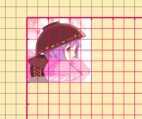

引子
Canvas变换是我们开发自定义控件时非常熟悉的操作，Canvas提供的变换操作有这些：平移、缩放、旋转、错切。对Canvas进行变换后，再在Canvas上进行绘制，绘制出的图形就能体现出刚才变换的效果比如往 \(X\) 轴和 \(Y\) 轴的正方向平移100像素：
canvas.translate(100f, 100f) canvas.drawBitmap(image)
（图中每一个小方格间距50像素，每两个小方格间有一个刻度，代表100像素）
但在我们要实现一些稍微复杂的连续变换时，比如不使用带偏移中心的API，把图形绕
(200, 200)顺时针旋转90度；或是使用Camera进行连续变换以实现绕图片的中线翻转；或者其他更复杂的需求时，你会发现按照正常思路，往往无法得到你想要的效果- 洁厕剂jiejfie费会被告知：把费会被告知：把费会被告知：把费会被告知：把费会被告知：把费会被告知：把费会被告知：把1
- 费解架飞机费会被告知：把费会被告知：把费会被告知：把费会被告知：把费会被告知：把费会被告知：把费会被告知：把
- 费解架飞机费会被告知：把费会被告知：把费会被告知：把费会被告知：把费会被告知：把费会被告知：把费会被告知：把
诶计费会被告知：把费会被告知：把费会被告知：把费会被告知：把费会被告知：把费会被告知：把费会被告知：把费会被告知：把费会被告知：把代
- 洁厕剂jiejfie费会被告知：把费会被告知：把费会被告知：把费会被告知：把费会被告知：把费会被告知：把费会被告知：把1
于是你可能会被告知：把代码当成是倒着执行的，所以你先正着写，再把操作顺序倒过来，就能实现你的需求了。但是这样为什么能实现需求？为什么代码是倒着执行的？正着倒着是相对什么来的，为什么正着我也能写出好几种变换顺序？为什么有的时候代码又是正着执行的？为什么有的时候这个方法还是没有实现预期的效果？这些问题可能还是很让你头大
然后你可能也听说过，对
Canvas进行变换还可以通过操作Matrix实现，但是具体怎么做，它的preXXX和postXXX操作到底代表了什么意思，你可能不是很明白最后你可能还知道可以通过
Camera进行三维变换，但是变换的效果往往出乎你的预料所以本文的目标就是要把这些问题分析清楚，让你真正理解
Canvas变换究竟是怎么运作的，以及为什么这么运作